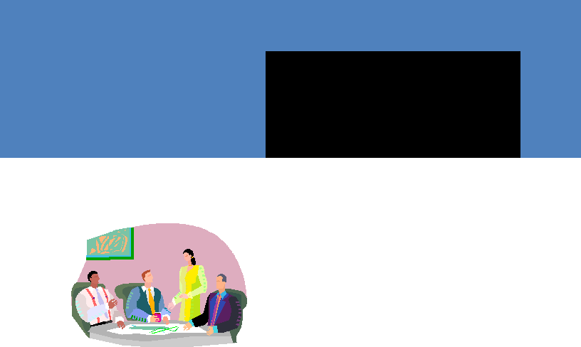

|

Page 66
In an ideal world, it’s easy to come up with a solution that
would 100% satisfy the interests and needs of parties in
conflict. But in reality: few issues are cut-and-dried. Each
party will has a valid point to be acknowledged, and some
sacrifices must be made. But in order to ensure that the
position of parties in conflict are communicated clearly and
argued persuasively, each person must have negotiation
skills in his or her arsenal.
In this module, you will be presented with ways you can
manage conflicts, which are a common source of uncivil behavior, in your workplace. Among these ways
are mediation, arbitration, and creative problem-solving.
During a negotiation, it would be wise not
to take anything personally. If you leave
personalities out of it, you will be able to
see opportunities more objectively.
Brian Koslow
|